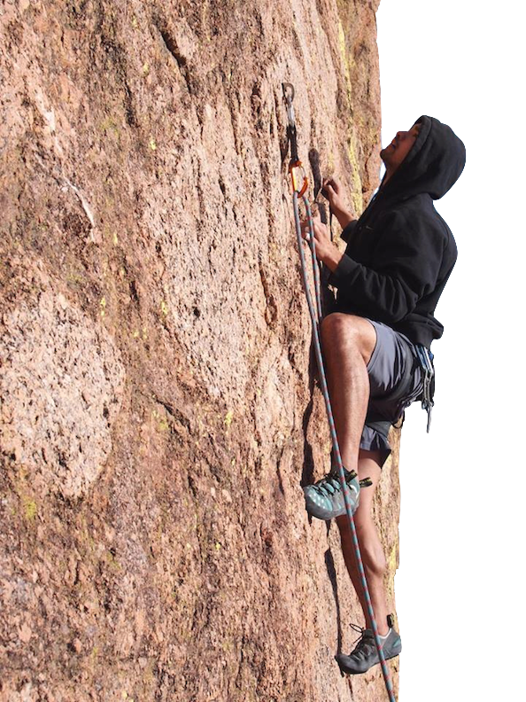

About Me
Born in New Jersey and eventually making my way through Virginia and California, I attended college in Florida. I obtained a B.S. in Applied Physiology/ Kinesiology at the University of Florida and my Doctor of Optometry degree at Nova Southeastern University. I am presently and have been working as an optometrist for the past 4 years. Within the past year, I have nurtured my interest in web development and look to further my skills. My interests include the outdoors and being active.